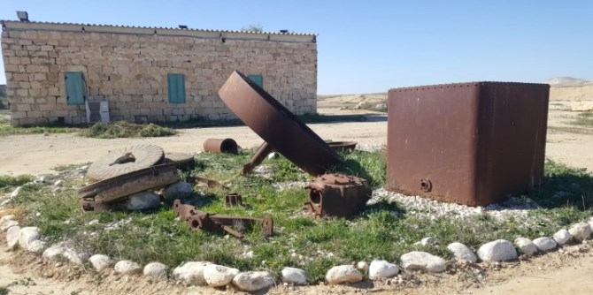
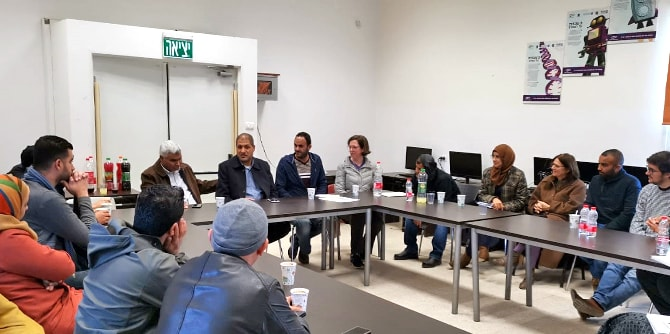
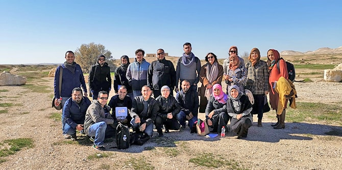

Fellows of the Mandel Program for Regional Leadership in Kseifa and Arara BaNegev, are participating in an in-depth study process focusing on "place and society," under the guidance of Kassim Alsraiha and Dr. Noa Milman. As part of this curricular unit, the group visited the site of Tel Al-Malah – a historic site that served as a hub of economic and social activity in the Negev during the Ottoman and British mandate periods. This site still has remnants that bear witness to the active communal life it once held, including a school, a flour mill, a clinic, a police station, wells, cemeteries, and more.

The fellows were introduced to the history of the site by
Dr. Mansur Nassasra, a historian who described the strategic importance of the site over the ages, and the changes that began in the early 1980s with the establishment of the Nevatim air force base and the move of the local residents to Kseifa and Arara BaNegev, two new residential locales that were built nearby.

Next, the fellows met with
MK Said al-Harumi, who discussed the challenges of a society in transition from the broad perspective of all areas of life in Arab-Bedouin society in the Negev. This meeting provided an opportunity for the fellows to share the challenges they face in their daily professional work in the Negev, and to think together about opportunities for change via active civic engagement.

{kind=link}
{kind=link}
{kind=link}